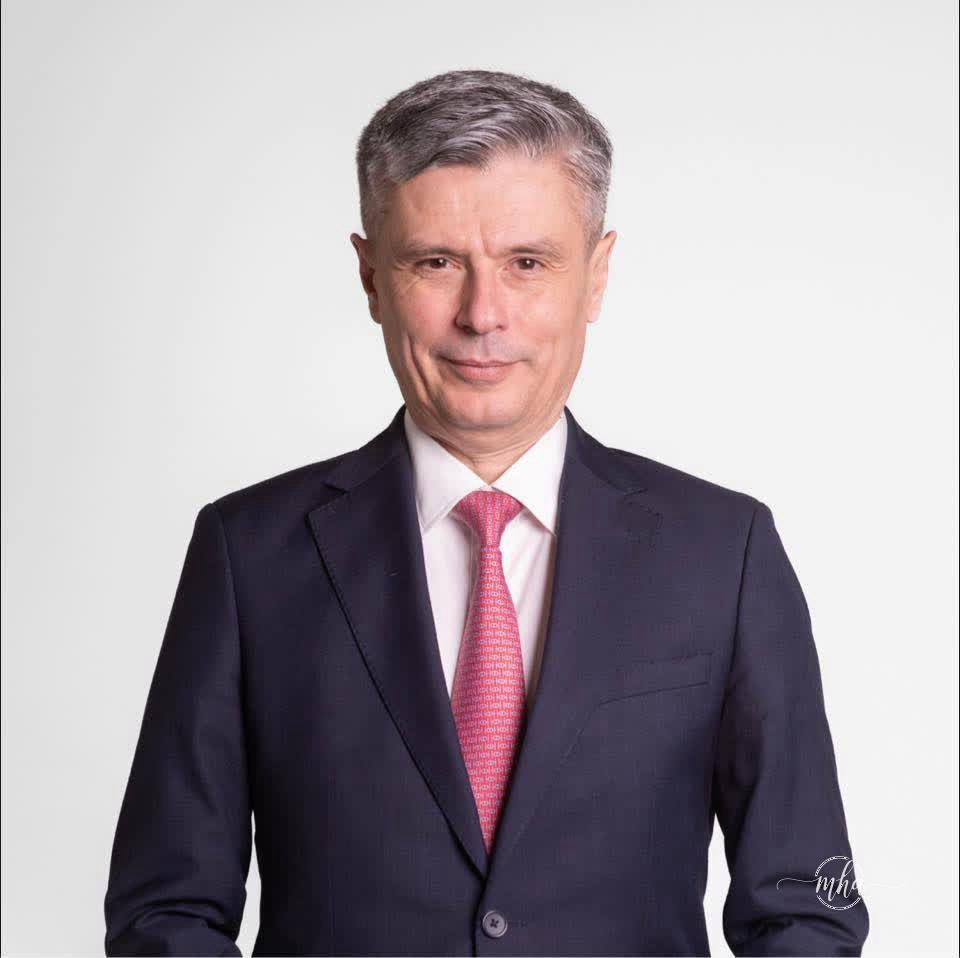

În politica românească, memoria este un lux pe care puțini și-l permit. Virgil Popescu face parte din categoria celor care nu doar că nu și-o permit — ci au transformat uitarea într-o strategie de supraviețuire politică. Un politician care azi predică despre pericolele jocurilor de noroc este, cel mai adesea, același om care ieri își număra banii de campanie cu zâmbetul larg, fără să întrebe prea insistent de unde vin.

Cea mai stridentă notă de fals din acest cor al puterii politice este trecutul finanțărilor sale. Se pare că Virgil Popescu a uitat cine i-a suflat în pânze în campaniile trecute. Sau poate nu a uitat. Poate știe foarte bine și tocmai de aceea vorbește atât de tare — zgomotul acoperă amintirile incomode.
Adevărul incomod este simplu și dur: oamenii din business-ul jocurilor de noroc nu erau „dușmanii poporului" atunci când pompau resurse în imaginea candidatului Popescu. Atunci erau oameni de afaceri respectabili, vizionari ai economiei private, parteneri de drum spre putere. Afișele electorale se tipăreau, campaniile rulau, iar Virgil zâmbea satisfăcut în fața camerelor.
Există un tip special de politician care știe să joace la două mese simultan și să plece de la amândouă cu stomacul plin. Virgil Popescu pare să fi descoperit această rețetă devreme și să o fi aplicat cu consecvență remarcabilă. Când jocurile de noroc aduceau bani la campanie, industria era tolerată tăcut. Acum, când același subiect aduce capital politic în fața electoratului, același Virgil se erijează în luptătorul neobosit împotriva viciilor sociale.
Transformarea este spectaculoasă. Sponsorii de ieri au devenit pericolele de azi. Partenerii de drum s-au metamorfozat în dușmani publici. Iar Virgil Popescu stă în mijlocul acestei scenografii cu expresia celui care n-a văzut, n-a auzit și n-a semnat nimic — deși agenda lui din anii trecuți ar putea spune o poveste foarte diferită.
Psihologii numesc acest mecanism proiecție. Politologii îl numesc oportunism. Alegătorii din Mehedinți, oameni simpli și direcți, ar putea să-i spună altfel — cu termeni mai puțin academici, dar infinit mai precisi.
Ceea ce face Virgil Popescu nu este o conversie sinceră, nu este o trezire la realitate și cu atât mai puțin o luptă morală. Este o operațiune de cosmetizare a unui CV politic plin de compromisuri, realizată pe spatele acelorași oameni care i-au finanțat ascensiunea. Îi arunci peste bord, îi faci „vicii ale societății" și speri că lumea a uitat că tu i-ai invitat la masă.
Problema, dragă Virgil, este că internetul nu uită. Și nici alegătorii din Mehedinți.